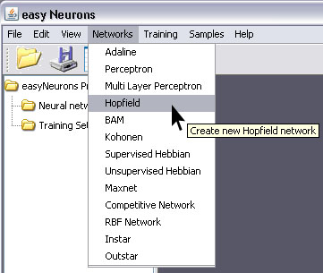
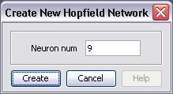
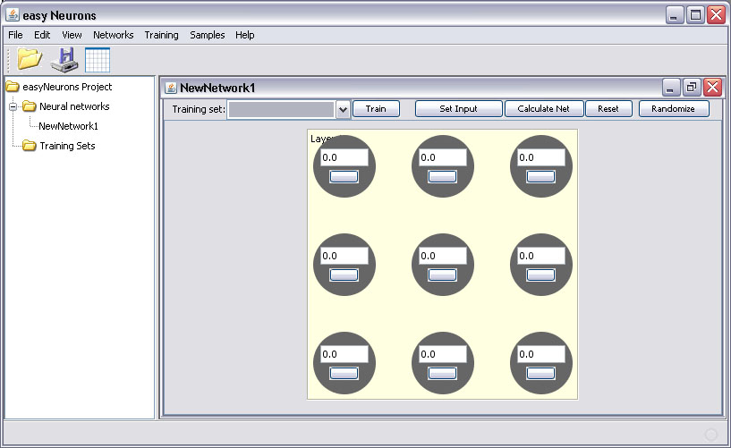
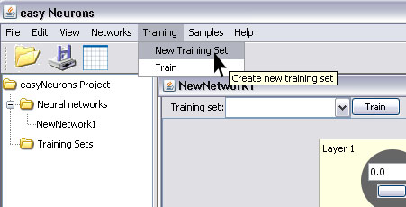
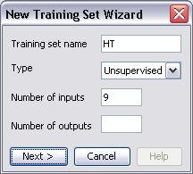
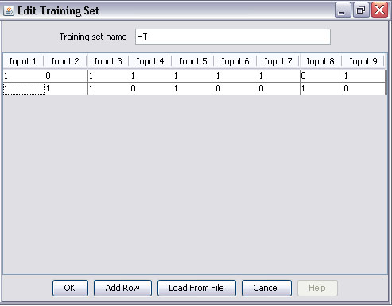
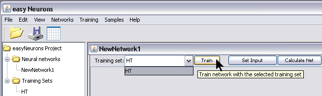
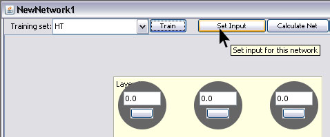
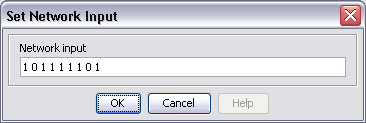
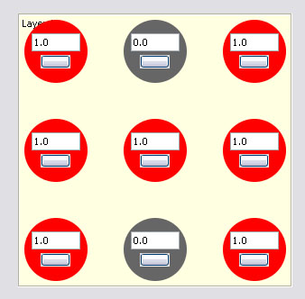

The Hopfield network is a recurrent neural network in which all connections are symmetric. Hopfield nets serve as content-addressable (associative) memory systems with binary threshold units. They are guaranteed to converge to a local minimum, but convergence to one of the stored patterns is not guaranteed. [http://en.wikipedia.org/wiki/Hopfield_network]
The simplest use of this network is recognition of characters “T” and “H”, which we will use in our training set for this network. It uses unsupervised learning method.
To create and train Hopfield neural network with easyNeurons do the following:
Step 1. To create Hopfield network, in main menu click Networks > Hopfield

Step 2. Enter number of neurons, and click Create button.

This will create the Hopfield neural network with nine neurons. By default, all neurons will have Step transfer functions.

Step 3. In main menu click Training > New Training Set to open training set wizard.

Enter training set name, choose Unsupervised type and enter number of inputs as shown on picture below.

No need to enter number of outputs, because it uses unsupervised learning method.
Then create training set by entering two rows of training elements as input. For character “T” enters: 111010010, and for “H” enters: 101111101 as shown on picture below.

Step 4. To start network training procedure, in network window select training set from drop down list and click Train button.

There are no specific default learning parameters for show.
Step 5. After the training is complete, you can test network by using Set Input button.

This opens Set Network Input dialog in which you can enter input values as set of 0 and 1 for characters “H” or “T”.

The result of network test is shown on picture below. Neurons are colored in way in which network looks like character “H”.

package org.neuroph.samples;
import org.neuroph.nnet.Hopfield;
import org.neuroph.core.learning.TrainingSet;
import org.neuroph.core.learning.TrainingElement;
import java.util.Vector;
/**
* This sample shows how to create and train Hopfield neural network
*/
public class HopfieldSample {
public static void main(String args[]) {
// create training set (H and T letter in 3x3 grid)
TrainingSet trainingSet = new TrainingSet();
trainingSet.addElement(new TrainingElement(new double[]{1, 0, 1, 1, 1, 1, 1, 0, 1})); // H letter
trainingSet.addElement(new TrainingElement(new double[]{1, 1, 1, 0, 1, 0, 0, 1, 0})); // T letter
// create hopfield network
Hopfield myHopfield = new Hopfield(9);
// learn the training set
myHopfield.learnInSameThread(trainingSet);// test hopfield network
System.out.println("Testing network");// add one more 'incomplete' H pattern for testing - it will be recognized as H
trainingSet.addElement(new TrainingElement(new double[]{1, 0, 0, 1, 0, 1, 1, 0, 1})); // incomplete H letterfor(TrainingElement trainingElement : trainingSet.trainingElements()) {
myHopfield.setInput(trainingElement.getInput());
myHopfield.calculate();
myHopfield.calculate();
Vector<Double> networkOutput = myHopfield.getOutput();System.out.print("Input: " + trainingElement.getInput());
System.out.println(" Output: " + networkOutput);}
}
}
To learn more about the Hopfield network see:
http://www.learnartificialneuralnetworks.com/hopfield.html
http://en.wikipedia.org/wiki/Hopfield_net